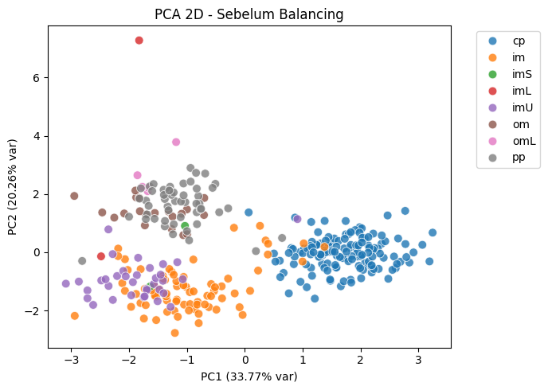
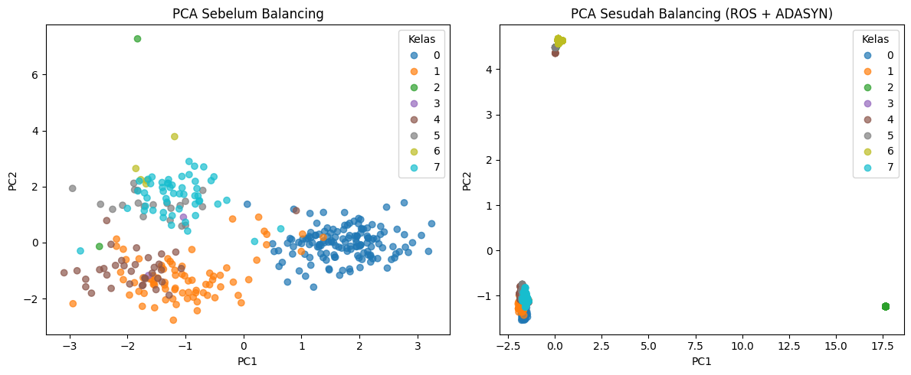
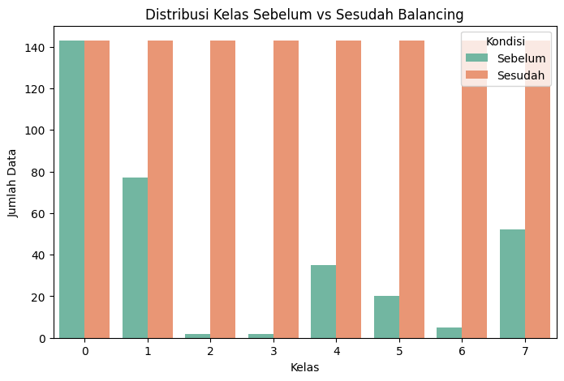
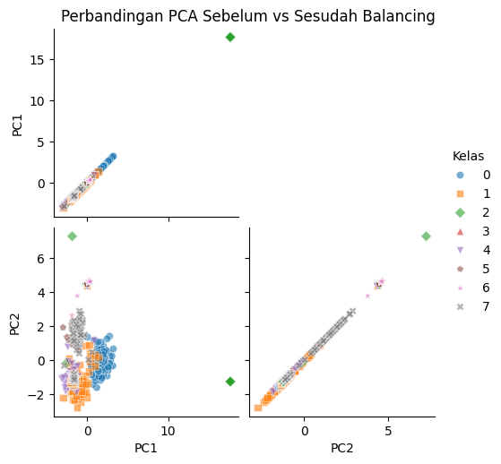
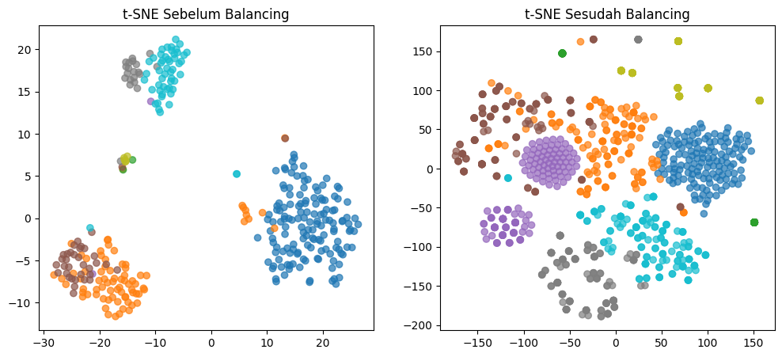
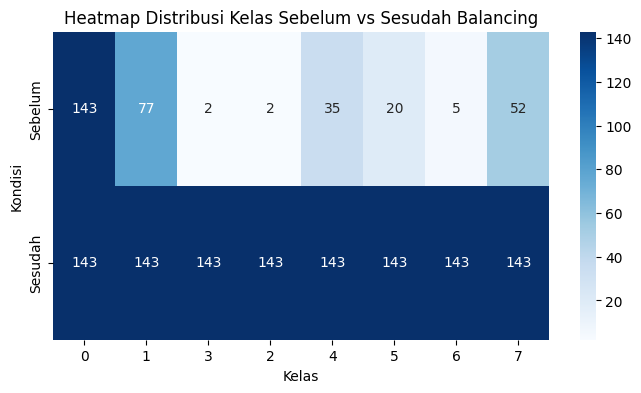
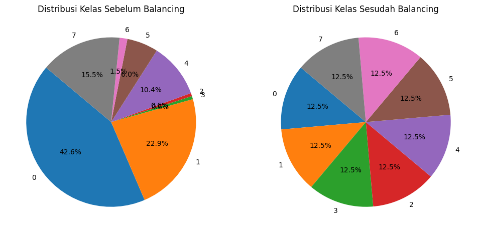

Penerapan PCA dan ADASYN pada Dataset Ecoli#
Ketentuan Tugas:
Tampilkan data dalam scatter plot menggunakan PCA. PCA mentransformasi data menjadi dimensi rendah (2D).
Lakukan penyeimbangan data menggunakan ADASYN.
Ploting data dari data yang diimbangkan menggunakan PCA, tandai data data hasil generatenya.
Import Library#
import pandas as pd
import pymysql
import numpy as np
import matplotlib.pyplot as plt
import seaborn as sns
from sklearn.preprocessing import StandardScaler, LabelEncoder
from sklearn.decomposition import PCA
from imblearn.over_sampling import ADASYN, RandomOverSampler
from collections import Counter
Koneksi ke MySQL dan Ambil Dataset#
# Koneksi ke MySQL
mysql_conn = pymysql.connect(
host="mysql-3c768195-aqbilbaraka.d.aivencloud.com",
user="avnadmin",
password="AVNS_WV9i6KvYoQZ3s6FclWP",
database="defaultdb",
port=16932,
ssl={"ssl": {}}
)
# Query tabel ecoli
query_mysql = "SELECT * FROM defaultdb.ecoli"
df = pd.read_sql(query_mysql, mysql_conn)
# Lihat data
df.head()
C:\Users\acer\AppData\Local\Temp\ipykernel_24064\255578765.py:13: UserWarning: pandas only supports SQLAlchemy connectable (engine/connection) or database string URI or sqlite3 DBAPI2 connection. Other DBAPI2 objects are not tested. Please consider using SQLAlchemy.
df = pd.read_sql(query_mysql, mysql_conn)
| id | mcg | gvh | lip | chg | aac | alm1 | alm2 | class | |
|---|---|---|---|---|---|---|---|---|---|
| 0 | 1 | 0.49 | 0.29 | 0.48 | 0.5 | 0.56 | 0.24 | 0.35 | cp |
| 1 | 2 | 0.07 | 0.40 | 0.48 | 0.5 | 0.54 | 0.35 | 0.44 | cp |
| 2 | 3 | 0.56 | 0.40 | 0.48 | 0.5 | 0.49 | 0.37 | 0.46 | cp |
| 3 | 4 | 0.59 | 0.49 | 0.48 | 0.5 | 0.52 | 0.45 | 0.36 | cp |
| 4 | 5 | 0.23 | 0.32 | 0.48 | 0.5 | 0.55 | 0.25 | 0.35 | cp |
Identifikasi fitur & label, pembersihan ringan#
# Identifikasi kolom non-numeric
print("Kolom & dtypes:")
print(df.dtypes)
# Cari kolom label (kelas). Logika: pilih kolom bertipe object/string dengan nunique < n
possible_labels = [c for c in df.columns if df[c].dtype == object or df[c].dtype.name == 'category']
label_col = None
for c in possible_labels:
if df[c].nunique() < len(df):
label_col = c
break
# Jika tidak ketemu, kamu harus set manual
if label_col is None:
# contohnya: label_col = 'class' # ganti jika perlu
raise ValueError("Tidak menemukan kolom label otomatis. Set 'label_col' manual sesuai dataset (mis. 'class').")
print("Terpilih sebagai label:", label_col)
# Pilih fitur numerik (exclude id / label)
num_cols = df.select_dtypes(include=[np.number]).columns.tolist()
# Kadang dataset UCI menyertakan index/sequence name sebagai kolom object unik - pastikan mengeluarkannya
print("Kolom numerik digunakan untuk PCA/ADASYN:", num_cols)
Kolom & dtypes:
id int64
mcg float64
gvh float64
lip float64
chg float64
aac float64
alm1 float64
alm2 float64
class object
dtype: object
Terpilih sebagai label: class
Kolom numerik digunakan untuk PCA/ADASYN: ['id', 'mcg', 'gvh', 'lip', 'chg', 'aac', 'alm1', 'alm2']
Pra-pemrosesan fitur: drop missing, scale, encode label#
# Buat salinan kerja
df_proc = df.copy()
# Drop rows dengan missing pada fitur numerik (atau lakukan imputasi bila ingin)
df_proc = df_proc.dropna(subset=num_cols)
print("After dropna shape:", df_proc.shape)
label_col = df.columns[-1]
# X (fitur numerik) dan y (label)
X = df_proc[num_cols].values
y = df_proc[label_col].values
# Encode label ke integer untuk ADASYN & plotting
le = LabelEncoder()
y_enc = le.fit_transform(y)
class_names = le.classes_
print("Class mapping:", dict(enumerate(class_names)))
# Standardize fitur
scaler = StandardScaler()
X_scaled = scaler.fit_transform(X)
After dropna shape: (336, 9)
Class mapping: {0: 'cp', 1: 'im', 2: 'imL', 3: 'imS', 4: 'imU', 5: 'om', 6: 'omL', 7: 'pp'}
Preprocessing Data#
# Pisahkan fitur & target
X = df.drop(columns=["class"])
y = df["class"]
# Encode label target (class → angka)
le = LabelEncoder()
y_enc = le.fit_transform(y)
# Standarisasi fitur
scaler = StandardScaler()
X_scaled = scaler.fit_transform(X)
print("Distribusi awal:", Counter(y_enc))
Distribusi awal: Counter({0: 143, 1: 77, 7: 52, 4: 35, 5: 20, 6: 5, 3: 2, 2: 2})
PCA 2D & scatter plot (sebelum balancing)#
# Fit PCA pada data asli (2 komponen)
pca = PCA(n_components=2, random_state=42)
X_pca_before = pca.fit_transform(X_scaled) # <<< ini yang belum ada
plt.figure(figsize=(7,5))
sns.scatterplot(
x=X_pca_before[:,0], y=X_pca_before[:,1],
hue=y, palette="tab10", s=60, edgecolor="w", alpha=0.8
)
plt.title("PCA 2D - Sebelum Balancing")
plt.xlabel(f"PC1 ({pca.explained_variance_ratio_[0]*100:.2f}% var)")
plt.ylabel(f"PC2 ({pca.explained_variance_ratio_[1]*100:.2f}% var)")
plt.legend(bbox_to_anchor=(1.05,1), loc="upper left")
plt.tight_layout()
plt.show()

Cek distribusi kelas sebelum balancing#
orig_counts = pd.Series(y).value_counts()
print("Counts before balancing:")
print(orig_counts)
Counts before balancing:
class
cp 143
im 77
pp 52
imU 35
om 20
omL 5
imS 2
imL 2
Name: count, dtype: int64
Lakukan balancing menggunakan ADASYN#
Sebelum Resampling#
print("Distribusi sebelum:", Counter(y_enc))
Distribusi sebelum: Counter({0: 143, 1: 77, 7: 52, 4: 35, 5: 20, 6: 5, 3: 2, 2: 2})
Step 1: RandomOverSampler dulu → agar kelas minoritas punya cukup data#
ros = RandomOverSampler(random_state=42)
X_ros, y_ros = ros.fit_resample(X_scaled, y_enc)
print("Distribusi setelah ROS:", Counter(y_ros))
Distribusi setelah ROS: Counter({0: 143, 1: 143, 3: 143, 2: 143, 4: 143, 5: 143, 6: 143, 7: 143})
Step 2: ADASYN → membuat synthetic samples#
adasyn = ADASYN(random_state=42, n_neighbors=1) # n_neighbors=1 agar aman
X_res, y_res = adasyn.fit_resample(X_ros, y_ros)
print("Shape sebelum:", X_scaled.shape, "→ sesudah:", X_res.shape)
print("Distribusi sesudah ADASYN:", Counter(y_res))
Shape sebelum: (336, 8) → sesudah: (1144, 8)
Distribusi sesudah ADASYN: Counter({0: 143, 1: 143, 3: 143, 2: 143, 4: 143, 5: 143, 6: 143, 7: 143})
Visualisasi PCA Sesudah Balancing#
# Transformasi PCA
X_pca_after = pca.fit_transform(X_res)
plt.figure(figsize=(12,5))
# Sebelum balancing
plt.subplot(1,2,1)
scatter1 = plt.scatter(X_pca_before[:,0], X_pca_before[:,1],
c=y_enc, cmap="tab10", alpha=0.7)
plt.title("PCA Sebelum Balancing")
plt.xlabel("PC1"); plt.ylabel("PC2")
plt.legend(*scatter1.legend_elements(), title="Kelas")
# Sesudah balancing
plt.subplot(1,2,2)
scatter2 = plt.scatter(X_pca_after[:,0], X_pca_after[:,1],
c=y_res, cmap="tab10", alpha=0.7)
plt.title("PCA Sesudah Balancing (ROS + ADASYN)")
plt.xlabel("PC1"); plt.ylabel("PC2")
plt.legend(*scatter2.legend_elements(), title="Kelas")
plt.tight_layout()
plt.show()

Perbandingan Distribusi Kelas Sebelum dan Sesudah Balancing#
Barplot#
import seaborn as sns
# Hitung distribusi kelas
from collections import Counter
dist_before = Counter(y_enc)
dist_after = Counter(y_res)
# Konversi ke DataFrame biar enak diplot
df_dist = pd.DataFrame({
"Kelas": list(dist_before.keys()),
"Sebelum": list(dist_before.values()),
"Sesudah": [dist_after[k] for k in dist_before.keys()]
})
# Plot side-by-side
df_melted = df_dist.melt(id_vars="Kelas", var_name="Kondisi", value_name="Jumlah")
plt.figure(figsize=(8,5))
sns.barplot(data=df_melted, x="Kelas", y="Jumlah", hue="Kondisi", palette="Set2")
plt.title("Distribusi Kelas Sebelum vs Sesudah Balancing")
plt.xlabel("Kelas")
plt.ylabel("Jumlah Data")
plt.show()
print("Distribusi sebelum balancing:", dist_before)
print("Distribusi sesudah balancing:", dist_after)

Distribusi sebelum balancing: Counter({0: 143, 1: 77, 7: 52, 4: 35, 5: 20, 6: 5, 3: 2, 2: 2})
Distribusi sesudah balancing: Counter({0: 143, 1: 143, 3: 143, 2: 143, 4: 143, 5: 143, 6: 143, 7: 143})
Pairplot PCA#
# Buat dataframe gabungan sebelum & sesudah
df_before = pd.DataFrame(X_pca_before, columns=["PC1","PC2"])
df_before["Kelas"] = y_enc
df_before["Status"] = "Sebelum"
df_after = pd.DataFrame(X_pca_after, columns=["PC1","PC2"])
df_after["Kelas"] = y_res
df_after["Status"] = "Sesudah"
df_compare = pd.concat([df_before, df_after])
# Pairplot perbandingan
sns.pairplot(df_compare, hue="Kelas", diag_kind=None, kind="scatter",
markers=["o","s","D","^","v","p","*","X"],
palette="tab10", corner=True, height=2.5,
plot_kws={"alpha":0.6})
plt.suptitle("Perbandingan PCA Sebelum vs Sesudah Balancing", y=1.02)
plt.show()

t-SNE Visualization#
from sklearn.manifold import TSNE
tsne = TSNE(n_components=2, random_state=42, perplexity=30, n_iter=1000)
# Transform data
X_tsne_before = tsne.fit_transform(X_scaled)
X_tsne_after = tsne.fit_transform(X_res)
# Plot sebelum
plt.figure(figsize=(12,5))
plt.subplot(1,2,1)
plt.scatter(X_tsne_before[:,0], X_tsne_before[:,1], c=y_enc, cmap="tab10", alpha=0.7)
plt.title("t-SNE Sebelum Balancing")
# Plot sesudah
plt.subplot(1,2,2)
plt.scatter(X_tsne_after[:,0], X_tsne_after[:,1], c=y_res, cmap="tab10", alpha=0.7)
plt.title("t-SNE Sesudah Balancing")
plt.show()

Heatmap Distribusi Kelas#
# Buat dataframe distribusi
df_heat = pd.DataFrame({
"Sebelum": dist_before,
"Sesudah": dist_after
}).T
plt.figure(figsize=(8,4))
sns.heatmap(df_heat, annot=True, fmt="d", cmap="Blues")
plt.title("Heatmap Distribusi Kelas Sebelum vs Sesudah Balancing")
plt.xlabel("Kelas")
plt.ylabel("Kondisi")
plt.show()

Pie Chart Distribusi Kelas#
fig, axes = plt.subplots(1, 2, figsize=(12,6))
# Sebelum
axes[0].pie(list(dist_before.values()), labels=list(dist_before.keys()),
autopct='%1.1f%%', startangle=140, colors=sns.color_palette("tab10"))
axes[0].set_title("Distribusi Kelas Sebelum Balancing")
# Sesudah
axes[1].pie(list(dist_after.values()), labels=list(dist_after.keys()),
autopct='%1.1f%%', startangle=140, colors=sns.color_palette("tab10"))
axes[1].set_title("Distribusi Kelas Sesudah Balancing")
plt.show()
